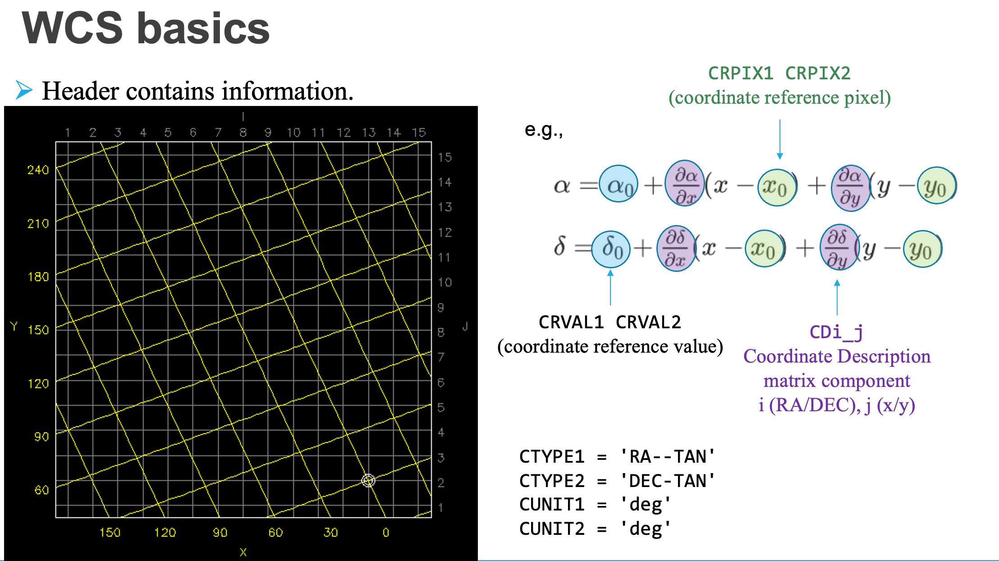
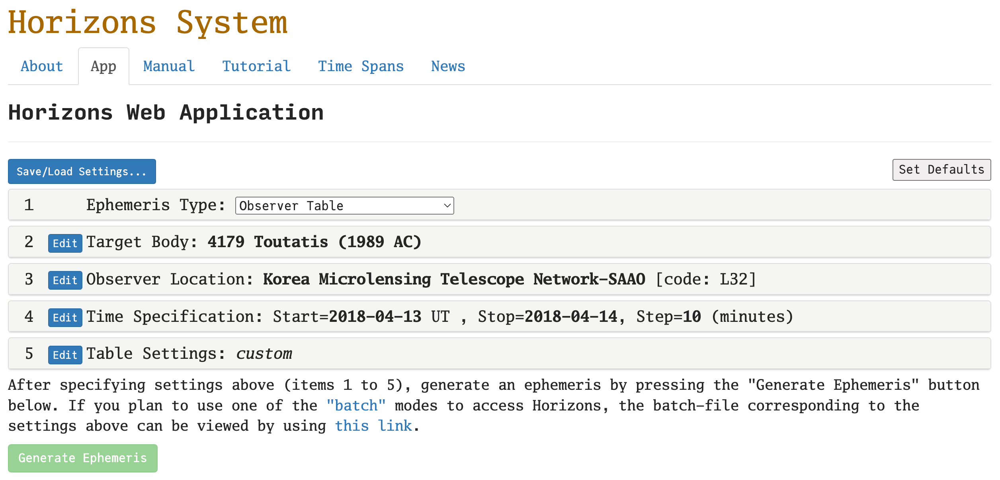

5. Querying from the Catalog#
If WCS(World Coordinate System: converts image XY pixel to, e.g., RA/DEC. See slides 4-7 of this, for example) is properly implemented, we should be able to find stars in the image automatically.
astroquery is an astropy-affiliated python package for such query.
Here I will demonstrate how to query Pan-STARRS DR2 and Gaia catalog, which are two of the widely used catalogs as of 2023.
And in the later part, I will show how to use JPL HORIZONS, that is used for querying the ephemerides (positional information of celestial objects) of solar system objects.
%load_ext version_information
import time
now = time.strftime("%Y-%m-%d %H:%M:%S (%Z = GMT%z)")
print(f"This notebook was generated at {now} ")
vv = %version_information astropy, numpy, scipy, matplotlib, astroquery, photutils, version_information
for i, pkg in enumerate(vv.packages):
print(f"{i} {pkg[0]:10s} {pkg[1]:s}")
This notebook was generated at 2023-05-09 15:36:36 (KST = GMT+0900)
0 Python 3.10.10 64bit [Clang 14.0.6 ]
1 IPython 8.13.2
2 OS macOS 13.1 arm64 arm 64bit
3 astropy 5.2.2
4 numpy 1.24.3
5 scipy 1.10.1
6 matplotlib 3.7.1
7 astroquery 0.4.7.dev8597
8 photutils 1.6.0
9 version_information 1.0.4
# %matplotlib notebook
from IPython.core.interactiveshell import InteractiveShell
from IPython import get_ipython
%config InlineBackend.figure_format = 'retina'
InteractiveShell.ast_node_interactivity = 'last_expr'
ipython = get_ipython()
from pathlib import Path
import numpy as np
from astropy import units as u
from astropy.nddata import CCDData
from astropy.coordinates import SkyCoord
from astropy.time import Time
from astroquery.gaia import Gaia
from astroquery.mast import Catalogs
from astroquery.jplhorizons import Horizons
Gaia.ROW_LIMIT = -1 # no limit
from matplotlib import pyplot as plt
from matplotlib import rcParams
plt.style.use('default')
rcParams.update({'font.size':12})
from photutils.aperture import (CircularAperture, CircularAnnulus,
aperture_photometry, ApertureStats)
from photutils.detection import DAOStarFinder
import warnings
warnings.filterwarnings('ignore', category=UserWarning, append=True)
import _tool_visualization as vis
DATAPATH = Path('../../Tutorial_Data')
TMPDIR = Path('tmp')
TMPDIR.mkdir(exist_ok=True)
allfits = list(DATAPATH.glob("*p4179*.fits"))
allfits.sort()
ccd = CCDData.read(allfits[0])
WARNING: FITSFixedWarning: RADECSYS= 'ICRS ' / Telescope Coordinate System
the RADECSYS keyword is deprecated, use RADESYSa. [astropy.wcs.wcs]
5.1. The Catalogs#
Gaia (Wikipedia) is the ESA space mission that is planned to work from 2013-2025. Its main goal is to perform precise astrometry of 1 billion objects. Since it has two passbands, colorimetry has also been performed.
As of 2023, Data Realease 3 (DR3) is the most recent available data set for Gaia.
Pan-STARRS1 (also called PS1; Wikipedia) is a ground-based 1.8 m Ritchey-Chredien telescope facility at Hawaii.
As of 2023, Data Realease 2 (DR2) is the most recent available data set for PS1.
5.2. Archives#
There are multiple archive services for large-scale astronomical datasets:
- VizieR (Wikipedia)
A catalog service run by Université de Strasbourg/CNRS. I feel many people archive their observational results (e.g., galaxy redshift catalog, asteroid polarimetric observation results, etc) to VizieR. Sometimes, for some reasons I cannot understand, large-catalog data are not accessible from VizieR for very long time. Also, the column names in VizieR is always very different from other catalog services. You can go to here and search for
gaiaorps1for instance.- MAST (kulski Archive for Space Telescopes; Wikipedia)
A catalog survice run by STScI. I feel MAST mainly goes with space telescope data (HST, JWST, Gaia, TESS, …). Two main ground-based mission data are available, namely Pan-STARRS and VLA-FIRST.
It seems like the most official way to access Gaia is through astroquery.Gaia using TAP+ (see official website’s “PYTHON ACCESS”). Indeed, Gaia DR3 is available only from here, not from MAST.
Important
Before proceed, please read and follow the tutorials of astroquery/gaia. (only 1.1. Query object and 1.2. Cone search are enough, i.e., .query_object_async and .cone_search_async)
Also, please skim through astropy/wcs. You don’t have to know the details, but you have to know the basic usages, e.g., the basic usage shown in astropy/wcs/wcsapi.
5.3. Query Stars in the FoV#
Now check if our FITS file (CCDData) has WCS information. Since in our observation, the pixel scale is roughly 0.39 arcsec per pixel. Thus, let’s query the stars within
a circular region (so-called the cone) centered at the center of our FoV, radius of
fov_radius = 0.4*diagonal_length/2. ← This is because MAST only supports cone search.a rectangular region centered at the center of our FoV, width and height of
0.4*widthand0.4*height, respectively. ← This is because Gaia.query_object_async supports rectangular query.
print(ccd.wcs)
pix_scale = 0.4*u.arcsec
center_xy = np.array(ccd.shape)/2
center_radec = ccd.wcs.wcs_pix2world(*center_xy, 0)
center_coo = SkyCoord(*center_radec, unit='deg')
width, height = np.array(ccd.shape)*pix_scale
print("\nCoordinate of the center of the image:\n", center_coo)
fov_radius = np.sqrt((np.array(ccd.shape)**2).sum())/2 * pix_scale
WCS Keywords
Number of WCS axes: 2
CTYPE : 'RA---TAN' 'DEC--TAN'
CRVAL : 204.8640878996 -8.991494826739
CRPIX : -4068.090526349 5085.76507007
PC1_1 PC1_2 : -0.0001096993846665 -1.593373136163e-06
PC2_1 PC2_2 : -2.91576786403e-07 0.0001095957848141
CDELT : 1.0 1.0
NAXIS : 999 999
Coordinate of the center of the image:
<SkyCoord (ICRS): (ra, dec) in deg
(204.36178211, -9.49675272)>
/Users/ysbach/mambaforge/envs/snuao/lib/python3.10/site-packages/astropy/wcs/wcs.py:3064: RuntimeWarning: cdelt will be ignored since cd is present
description.append(s.format(*self.wcs.cdelt))
The meaning of CRVAL, CRVAL, CRPIX, and PC (you can just assume CD is identical to PC) matrices:

# =====
# If you want to use MAST, only DR2 is available as of 2023-04-26.
# You can uncomment q_gaia line.
# Gaia DR2 needs `version=2`
# q_gaia = Catalogs.query_region(center_coo, radius=fov_radius, catalog="Gaia", version=2)
# =====
# Set default table as DR3 and GAIA_SOURCE.
Gaia.MAIN_GAIA_TABLE = "gaiadr3.gaia_source"
q_gaia = Gaia.query_object_async(coordinate=center_coo, width=width, height=height)
# PS1 DR2 needs `data_release="dr2"`.
q_ps = Catalogs.query_region(center_coo, radius=fov_radius, catalog="Panstarrs",
data_release="dr2", table="mean")
# Change some column names for convenience.
q_ps["raMean"].name = "ra"
q_ps["decMean"].name = "dec"
q_ps["gMeanPSFMag"].name = "g"
q_ps["rMeanPSFMag"].name = "r"
print("Number of results:",len(q_gaia))
print("Number of results:",len(q_ps))
INFO: Query finished. [astroquery.utils.tap.core]
Number of results: 75
Number of results: 5907
print("Number of columns in Gaia, PS1:", len(q_gaia.colnames), len(q_ps.colnames))
Number of columns in Gaia, PS1: 153 125
5.3.1. Gaia DR3#
Note that Gaia DR3 GAIA_SOURCES has 153 columns! The detailed explanation of this table (GAIA_SOURCE table) in DR3 is available here. What we need are only RA, DEC, and magnitude information. For the magnitudes, the magnitude conversion methods for DR3 are given here:
using 96413 sources (\(\sigma = 0.03017\)) and \(C := G_\mathrm{BP} - G_\mathrm{RP}\) color. The equation above is applicable to \(-0.5 < C < 5.0\).
Note
If you remember the error analysis in statistics class or theoretical part of this lecture, you may remember the uncertainty of the flux is roughly Gaussian (Poisson distribution in the limiting case). However, the magnitude is calculated by taking a logarithm to this flux. That means, the uncertainty in magnitude is not Gaussian, rigorously speaking, and the error-bars are inherently and expectedly asymmetric. Because of this, GAIA team refuses to provide any “magnitude error” value, but only provide the “flux error” value.
This is a bit annoying for most astronomers because we want to use simple error-bar for magnitudes. However, at the same time, I feel this is a declaration that astronomy is now going into a branch of precise science, not grossly approximating the asymmetric error-bar into a single number.
Warning
When you load FITS by CCDData.read, the WCS related information in the header will be deleted. Hence, you must use ccd.wcs to access the WCS information. In other words, WCS(ccd.header) will give empty WCS. This is a bit confusing, since you had to use WCS(hdu.header) in case of HDU object, as you practiced. When saving the CCDData back, WCS-related headers will be re-added.
For error analysis, note that, from Pogson’s formula:
(I is flux). Thus, ignoring any covariance, a simple error propagation gives
and
And you may also include the RMS error \(\sigma = 0.03017\) with that.
coef = np.array([-0.02704, 0.1425, -0.2156, 0.01426])
rmse = 0.03017
color = q_gaia["bp_rp"]
# Add useful columns
q_gaia["bp_snr"] = 1/q_gaia["phot_bp_mean_flux_over_error"]
q_gaia["rp_snr"] = 1/q_gaia["phot_rp_mean_flux_over_error"]
q_gaia["g_snr"] = 1/q_gaia["phot_g_mean_flux_over_error"]
# Calculate color error
q_gaia["dC"] = 2.5/np.log(10)*np.sqrt((q_gaia["rp_snr"])**2 + (q_gaia["bp_snr"])**2)
# Calculate V-mag and error
q_gaia["V"] = (
q_gaia["phot_g_mean_mag"]
+ coef[0] + coef[1]*color + coef[2]*color**2 + coef[3]*color**3
)
q_gaia["dV"] = np.sqrt(
2.5/np.log(10)*q_gaia["g_snr"]**2
+ (coef[1] + 2*coef[2]*color + 3*coef[3]*color**2)**2*q_gaia["dC"]**2
+ rmse**2
)
# Only select stars with good color
mask = (-0.5 < color) & (color < 5)
q1 = q_gaia["ra", "dec", "bp_rp", "g_snr", "bp_snr", "rp_snr", "dC", "V", "dV"][mask]
# Calculate x, y position
coo = SkyCoord(q1["ra"], q1["dec"], unit='deg')
q1["x"], q1["y"] = ccd.wcs.wcs_world2pix(coo.ra, coo.dec, 0)
# Remove stars outside the image
q1 = q1[(q1["x"] > 10) & (q1["x"] < ccd.shape[1]-10)
& (q1["y"] > 10) & (q1["y"] < ccd.shape[0]-10)]
# print
print(f"Total {len(q1)} stars")
q1.round(3)
q1
Total 65 stars
| ra | dec | bp_rp | g_snr | bp_snr | rp_snr | dC | V | dV | x | y |
|---|---|---|---|---|---|---|---|---|---|---|
| deg | deg | mag | ||||||||
| float64 | float64 | float32 | float32 | float32 | float32 | float32 | float32 | float32 | float64 | float64 |
| 204.352 | -9.504 | 0.732 | 0.016 | 0.139 | 0.188 | 0.254 | 20.859 | 0.051 | 586.313 | 435.758 |
| 204.373 | -9.505 | 2.855 | 0.002 | 0.033 | 0.004 | 0.036 | 16.681 | 0.041 | 399.077 | 428.649 |
| 204.373 | -9.505 | 2.871 | 0.006 | 0.016 | 0.01 | 0.02 | 16.781 | 0.034 | 399.015 | 427.491 |
| 204.373 | -9.505 | 2.748 | 0.005 | 0.245 | 0.087 | 0.282 | 19.131 | 0.205 | 403.101 | 420.853 |
| 204.35 | -9.508 | 1.956 | 0.004 | 0.13 | 0.051 | 0.152 | 19.712 | 0.087 | 607.765 | 395.122 |
| 204.378 | -9.502 | 0.28 | 0.003 | 0.035 | 0.058 | 0.073 | 19.432 | 0.03 | 355.88 | 450.611 |
| 204.34 | -9.486 | 2.01 | 0.003 | 0.092 | 0.032 | 0.106 | 19.125 | 0.066 | 692.754 | 596.982 |
| 204.343 | -9.514 | 2.116 | 0.005 | 0.116 | 0.037 | 0.132 | 19.665 | 0.082 | 669.384 | 345.025 |
| 204.341 | -9.513 | 1.08 | 0.0 | 0.002 | 0.002 | 0.003 | 15.47 | 0.03 | 684.598 | 352.004 |
| 204.345 | -9.518 | 1.801 | 0.006 | 0.135 | 0.061 | 0.161 | 20.172 | 0.085 | 650.856 | 304.49 |
| 204.334 | -9.502 | 0.732 | 0.005 | 0.085 | 0.077 | 0.125 | 20.313 | 0.036 | 752.049 | 455.31 |
| 204.377 | -9.523 | 1.174 | 0.002 | 0.013 | 0.009 | 0.017 | 17.866 | 0.031 | 367.571 | 259.337 |
| 204.35 | -9.469 | 0.725 | 0.003 | 0.04 | 0.039 | 0.061 | 19.568 | 0.032 | 599.882 | 755.681 |
| 204.379 | -9.471 | 1.173 | 0.012 | 0.206 | 0.138 | 0.269 | 20.741 | 0.088 | 338.946 | 728.53 |
| 204.375 | -9.469 | 2.53 | 0.002 | 0.059 | 0.01 | 0.065 | 18.277 | 0.054 | 379.274 | 753.508 |
| 204.352 | -9.467 | 1.924 | 0.001 | 0.019 | 0.008 | 0.023 | 17.426 | 0.032 | 582.302 | 772.492 |
| 204.376 | -9.468 | 1.026 | 0.007 | 0.112 | 0.132 | 0.188 | 20.495 | 0.057 | 366.729 | 759.281 |
| 204.387 | -9.517 | 0.638 | 0.0 | 0.003 | 0.003 | 0.004 | 15.986 | 0.03 | 273.809 | 314.073 |
| 204.33 | -9.513 | 2.294 | 0.005 | 0.135 | 0.047 | 0.155 | 19.702 | 0.101 | 783.429 | 350.589 |
| ... | ... | ... | ... | ... | ... | ... | ... | ... | ... | ... |
| 204.384 | -9.542 | 1.766 | 0.015 | 0.166 | 0.051 | 0.188 | 20.213 | 0.098 | 306.31 | 90.397 |
| 204.354 | -9.447 | 2.059 | 0.001 | 0.04 | 0.012 | 0.045 | 17.944 | 0.039 | 562.63 | 949.677 |
| 204.354 | -9.547 | 0.941 | 0.001 | 0.011 | 0.008 | 0.015 | 17.691 | 0.03 | 573.426 | 44.983 |
| 204.313 | -9.517 | 1.127 | 0.005 | 0.103 | 0.066 | 0.133 | 20.153 | 0.049 | 938.2 | 315.155 |
| 204.335 | -9.451 | 1.016 | 0.001 | 0.01 | 0.01 | 0.015 | 17.618 | 0.03 | 730.181 | 914.864 |
| 204.375 | -9.445 | 1.64 | 0.001 | 0.033 | 0.006 | 0.036 | 17.561 | 0.034 | 374.606 | 964.896 |
| 204.308 | -9.506 | 0.996 | 0.0 | 0.001 | 0.001 | 0.002 | 14.891 | 0.03 | 980.531 | 417.518 |
| 204.31 | -9.479 | 0.783 | 0.001 | 0.005 | 0.006 | 0.008 | 16.631 | 0.03 | 959.438 | 663.959 |
| 204.399 | -9.536 | 0.466 | 0.014 | 0.181 | 0.199 | 0.292 | 20.873 | 0.036 | 167.756 | 139.08 |
| 204.31 | -9.476 | 0.966 | 0.002 | 0.044 | 0.029 | 0.057 | 19.063 | 0.033 | 962.303 | 689.623 |
| 204.392 | -9.45 | 1.706 | 0.003 | 0.076 | 0.039 | 0.093 | 19.268 | 0.053 | 226.356 | 925.276 |
| 204.386 | -9.446 | 0.317 | 0.012 | 0.102 | 0.156 | 0.202 | 20.858 | 0.033 | 280.684 | 962.428 |
| 204.402 | -9.453 | 0.858 | 0.005 | 0.143 | 0.078 | 0.176 | 20.26 | 0.046 | 139.056 | 892.001 |
| 204.33 | -9.547 | 1.386 | 0.002 | 0.008 | 0.004 | 0.009 | 16.915 | 0.03 | 789.271 | 46.365 |
| 204.326 | -9.449 | 0.959 | 0.001 | 0.004 | 0.004 | 0.006 | 16.488 | 0.03 | 814.182 | 930.355 |
| 204.391 | -9.549 | 2.686 | 0.002 | 0.098 | 0.014 | 0.107 | 18.153 | 0.082 | 243.065 | 27.85 |
| 204.401 | -9.545 | 0.745 | 0.001 | 0.017 | 0.012 | 0.023 | 17.642 | 0.03 | 150.905 | 61.991 |
| 204.398 | -9.55 | 0.947 | 0.002 | 0.045 | 0.038 | 0.064 | 19.208 | 0.034 | 176.525 | 15.585 |
| 204.321 | -9.549 | 0.664 | 0.004 | 0.064 | 0.068 | 0.102 | 20.012 | 0.033 | 873.151 | 20.835 |
| 204.41 | -9.543 | 1.536 | 0.002 | 0.04 | 0.019 | 0.048 | 18.844 | 0.036 | 68.817 | 76.787 |
5.3.2. Pan-STARRS1 DR2#
It seems like there are three tables available from PS1 web query API (e.g., this notebook): “mean”, “stack”, and “detection”. All the metadata can be found based on the url (see ps1metadata function), e.g., this link for the metadata of mean table.
According to Tonry+12,
where g, r are the g- and r-band magnitudes in PS1 filter system, respectively. Thus,
And you may also include the RMS error \(\sigma = 0.012\) or \(0.015\) with that.
In real science case, you must remove galaxies for differential photometry (maybe discussed later). Here, we will ignore it.
# drop stars with unknown magnitudes
q_ps = q_ps.to_pandas().dropna(subset=["g", "r"])
# Calculate V and R
q_ps["V"] = 0.006 + 0.474*q_ps["g"] + 0.526*q_ps["r"]
q_ps["R"] = -0.138 - 0.131*q_ps["g"] + 1.131*q_ps["r"]
q_ps["dV"] = np.sqrt(
0.474**2*q_ps["gMeanPSFMagErr"]**2
+ 0.526**2*q_ps["rMeanPSFMagErr"]**2 + 0.012**2
)
q_ps["dR"] = np.sqrt(
0.131**2*q_ps["gMeanPSFMagErr"]**2
+ 1.131**2*q_ps["rMeanPSFMagErr"]**2 + 0.015**2
)
# Select only important columns
q2 = q_ps[["ra", "dec", "g", "r", "V", "R", "dV", "dR"]].copy().reset_index(drop=True)
# Select only brighter than 22 mag
q2 = q2[(q2["V"] < 22) & (q2["R"] < 22)].copy().reset_index(drop=True)
# Calculate x, y position
coo = SkyCoord(q2["ra"], q2["dec"], unit='deg')
q2["x"], q2["y"] = ccd.wcs.wcs_world2pix(coo.ra, coo.dec, 0)
# Remove stars outside the image
q2 = q2[(q2["x"] > 10) & (q2["x"] < ccd.shape[1]-10)
& (q2["y"] > 10) & (q2["y"] < ccd.shape[0]-10)]
# print
print(f"Total {len(q2)} stars")
q2.round(3)
q2
Total 126 stars
| ra | dec | g | r | V | R | dV | dR | x | y | |
|---|---|---|---|---|---|---|---|---|---|---|
| 3 | 204.398498 | -9.549908 | 19.685900 | 19.234800 | 19.454621 | 19.037706 | 0.013322 | 0.017627 | 176.493198 | 15.583189 |
| 4 | 204.401293 | -9.544794 | 17.974100 | 17.651400 | 17.810360 | 17.471126 | 0.012964 | 0.017497 | 150.902974 | 62.031846 |
| 5 | 204.402051 | -9.542688 | 21.183201 | 21.687500 | 21.454462 | 21.615563 | 0.165217 | 0.265355 | 143.877901 | 81.172085 |
| 6 | 204.404399 | -9.545665 | 21.825600 | 21.294300 | 21.552136 | 21.086700 | 0.078924 | 0.103779 | 123.186834 | 54.046154 |
| 7 | 204.410444 | -9.543147 | 19.949100 | 19.042500 | 19.478228 | 18.785735 | 0.021401 | 0.031288 | 68.791659 | 76.814691 |
| ... | ... | ... | ... | ... | ... | ... | ... | ... | ... | ... |
| 187 | 204.324440 | -9.513110 | 19.802000 | 19.544500 | 19.672555 | 19.372768 | 0.028427 | 0.025100 | 836.145051 | 351.508219 |
| 193 | 204.398435 | -9.494967 | 21.852900 | 21.455200 | 21.649710 | 21.265102 | 0.094912 | 0.174163 | 171.053749 | 514.877474 |
| 194 | 204.399843 | -9.495393 | 21.027300 | 20.572201 | 20.793918 | 20.374583 | 0.026426 | 0.036101 | 158.496791 | 510.969308 |
| 195 | 204.410279 | -9.496189 | 22.013399 | 20.967699 | 21.469361 | 20.692712 | 0.053874 | 0.058962 | 65.182124 | 503.478261 |
| 196 | 204.412028 | -9.498573 | 22.103300 | 21.557199 | 21.822051 | 21.347660 | 0.036635 | 0.020576 | 49.785889 | 481.781735 |
126 rows × 10 columns
Note that q2 is in pandas.DataFrame and q1 is astropy.Table.
5.3.3. Comparing two catalogs#
aps1 = CircularAperture(np.array([q1["x"], q1["y"]]).T, r=12)
aps2 = CircularAperture(np.array([q2["x"], q2["y"]]).T, r=15)
fig, axs = plt.subplots(1, 1, figsize=(8, 5), sharex=False, sharey=False, gridspec_kw=None)
vis.norm_imshow(axs, ccd, zscale=True)
aps1.plot(color='r', lw=1, alpha=0.5, ax=axs)
aps2.plot(color='k', lw=1, alpha=0.5, ax=axs)
for c, l in zip("rk", ["Gaia", "PS1"]):
axs.plot(np.nan, np.nan, f"{c}", label=l)
axs.legend(bbox_to_anchor=(1.05, 1), loc='upper left', borderaxespad=0.)
plt.tight_layout()
plt.show();
5.3.4. A Short Discussion#
Note that there are more objects in PS1 than Gaia. Since Gaia’s main purpose is astrometry, it is not surprising that PS1 is sensing more celestial objects. Also, PS1 has the filter system that is closer to the classical filter systems (it uses grizy). Thus, for ground-based differential photometry, PS1 catalog will be more useful.
5.4. JPL HORIZONS (Solar System)#
JPL HORIZONS is a ephemeris (plural ephemerides) service operated by NASA JPL. The main purpose of this tool is to perform precise N-body simulation, including the modern computational algorithms, and provide the results to the users. There are many cases you may need it, but the main purpose is to obtain the positional information of the solar system objects or satellite or spacecrafts at certain epoch(s).
Practice
For example, let’s query the information of our target in the CCD image that we are using. We took the image of asteroid (4179) Toutatis on UT 2018-04-13T21:30 (see ccd.header["DATE-OBS"]).

Set the table as below:
Ephemeris Type:
"Observer Table"Target Body: Click edit and search for
4179.Observer Location: Search for
SAAOand selectKorea Microlensing Telescope Network-SAAO (code: L32)Time Specification: Insert start/stop times as
2018-04-13and2018-04-14. Type Step size of10and"minutes".Table Settings: Click edit and select
"Default"button.“Additional Table Settings”: Elevation cutoff:
10, check the box of “Skip daylight”
Then hit the “Generate Ephemeris” button. You will see a long output, but what’s important is just the lines near the observation time (UT 2018-04-13T21:30):
Date__(UT)__HR:MN R.A._____(ICRF)_____DEC APmag S-brt delta deldot S-O-T /r S-T-O Sky_motion Sky_mot_PA RelVel-ANG Lun_Sky_Brt sky_SNR
2018-Apr-13 22:30 13 37 24.57 -09 29 35.4 20.609 7.453 2.82285755430415 2.9894066 177.5789 /L 0.6391 0.5987445 290.83331 8.3188634 n.a. n.a.
The explanation for each column is given at the bottom of the website. Important ones are the time (Date__(UT)__HR:MN), RA/DEC (R.A._____(ICRF)_____DEC), and the expected V-band magnitude (APmag). Sometimes you may need the heliocentric and geocentric distances (go to the Table Settings and check number 19 & 20).
After generating the ephemerides, you can see the detailed explanations of each column at the bottom part of the result page. https://astroquery.readthedocs.io/en/latest/jplhorizons/jplhorizons.html
From python, you can access HORIZONS using astroquery’s JPLHorizons module, thanks to M. Mommert:
objname = "4179"
observat = "L32"
t_obs = Time(ccd.header["DATE-OBS"]) + ccd.header["EXPTIME"] * u.s / 2
obj = Horizons(id=objname, location=observat, epochs=t_obs.jd)
obj_q = obj.ephemerides()
obj_q.pprint(max_width=100)
targetname datetime_str datetime_jd ... alpha_true PABLon PABLat
--- --- d ... deg deg deg
----------------------- ------------------------ ----------------- ... ---------- -------- ------
4179 Toutatis (1989 AC) 2018-Apr-13 21:30:56.000 2458222.396481481 ... 0.6463 205.7217 0.5207
The resulting obj_q contains many columns and they have slightly different names than that of HORIZONS you saw above. They are summarized in the official documentation. Few important columns are
RAandDEC: The RA/DEC in degrees.lighttime: asteroid-observer distance / c = time delay. The true time of light when it departed the object is, thus, observed time -lighttime.alpha: The phase angle in degrees (alphadiffer fromalpha_trueby only less than around 1 arcmin, so astronomers just usealpha, notalpha_true).
Practice
What if observatory has no designated code (e.g., SNU observatory)?
The answer is clearly written in the documentation. For SNU bldg 45 and 46, you can use location=dict(lon=126.95, lat=37.45, elevation=0.1).
Note
In real work, you don’t want to query this for every image (as it takes a lot of time). Better way is to obtain the t_obs for all the images and pass that as Horizons(..., epochs=t_obs_list) as python list object. See the official documentation for the usage, if necessary.
Once we know the RA/DEC, we can convert those to the image XY coordinate by using the WCS information in the header, as we did for stars:
pos_sky = SkyCoord(obj_q["RA"][0], obj_q["DEC"][0], unit='deg')
pos_pix = pos_sky.to_pixel(wcs=ccd.wcs)
print(pos_sky)
print(pos_pix)
ap0 = CircularAperture(np.array([pos_pix[0], pos_pix[1]]).T, r=20)
fig, axs = plt.subplots(1, 1, figsize=(8, 5), sharex=False, sharey=False, gridspec_kw=None)
vis.norm_imshow(axs, ccd, zscale=True)
aps2.plot(color='k', lw=1, alpha=0.5, ax=axs)
ap0.plot(color='r', lw=1, alpha=1, ax=axs)
plt.tight_layout()
plt.show();
<SkyCoord (ICRS): (ra, dec) in deg
(204.36166, -9.49665)>
(array(500.58291238), array(500.43561473))
The red circle is the location of our asteoid, (4179) Toutatis.